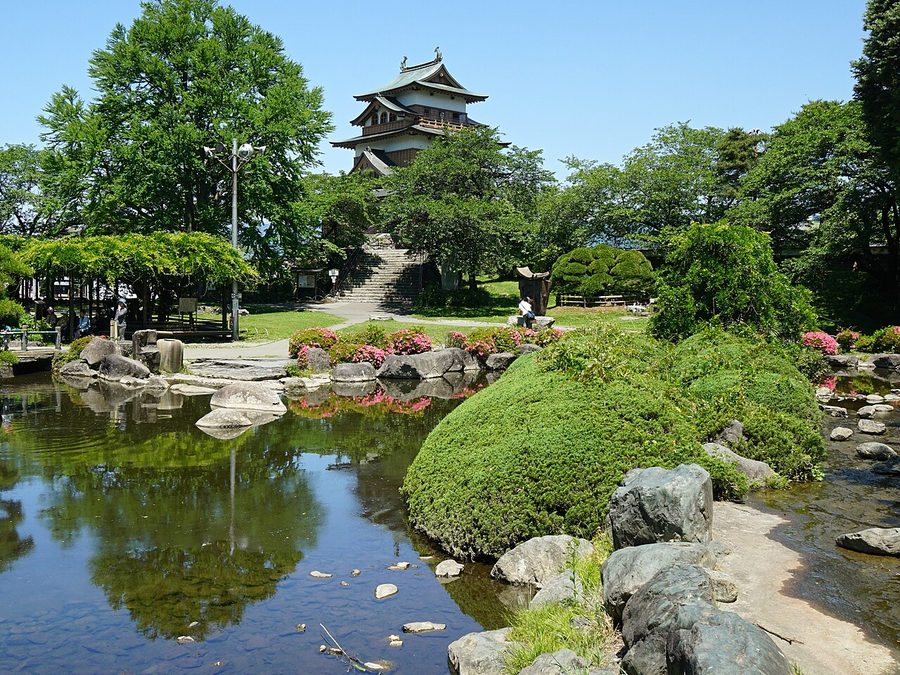
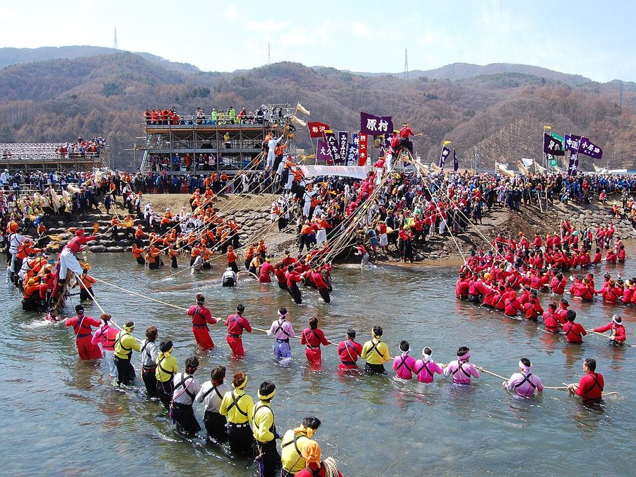
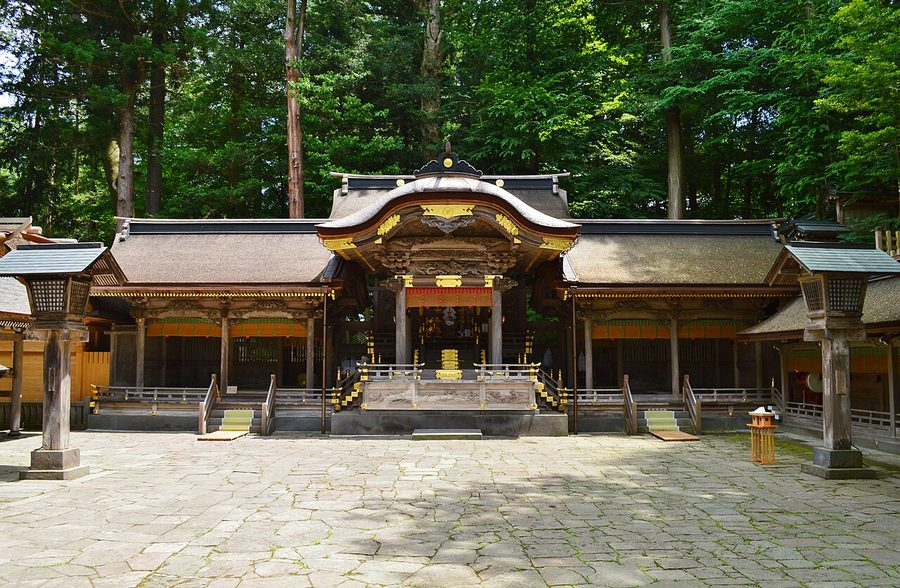

長野県諏訪市の日帰り温泉・銭湯・サウナ（21件）
寄り道スポット検索アプリ「ヨッテコ」の収録データから、長野県諏訪市の日帰り温泉・銭湯・サウナを営業時間・料金つきで一覧にしました（2026年8月時点）。
最も安いのは上諏訪温泉 大和温泉（300円）。最も遅くまで入れるのは信州上諏訪温泉 旅荘 二葉（24:00まで）。朝風呂なら西山温泉 中ん沢の湯（4:00開店）。
長野県諏訪市はどんなまち？
数字で見る🔍長野県諏訪市
まちの横顔



- 地形と気候: 諏訪湖に隣接し、寒暖の差が大きい顕著な大陸性気候の市です。年平均気温は11.4℃で、1月から2月にかけては日平均気温が氷点下となります。冬季には-15℃付近まで冷え込むこともあります。
- 観光: 諏訪湖や上諏訪温泉、諏訪大社の上社（本宮）、霧ヶ峰高原を抱える観光都市です。町並みは鎌倉時代から戦国時代にかけて鎌倉街道沿いに発達し、江戸時代には旧甲州街道の上諏訪宿が置かれた高島藩の城下町でもありました。
- 特産と文化: 戦中から戦後にかけて時計、カメラ、レンズなどの生産が増え、山と湖のある風土と相まって「東洋のスイス」と称されました。セイコーエプソンの本社および基幹部門、タケヤ味噌の本社があるほか、真澄、舞姫、麗人、本金、横笛のいわゆる「諏訪五蔵」と呼ばれる地酒メーカーが多いことでも知られています。
寄り道充実度（全国偏差値）
偏差値・順位は、ヨッテコ収録データ（2026年8月時点・26,033件）を市区町村別に集計した施設数の全国分布（1,728市区町村）から毎回算出しています。カードを押すとカテゴリ別の分析に切り替わります。
日帰り温泉から見た長野県諏訪市
天然温泉を使う店は90%、全国水準（67%）の1.4倍。——件数ではなく、中身に特徴が出るまち。
- 38%——露天風呂の割合は、全国水準（46%）に届きません。外の眺めより、湯そのものに向き合う造りが多いということになります。
- 90%の店が天然温泉です。全国水準は67%です。上諏訪温泉と諏訪大社の上社（本宮）を抱え、旧甲州街道上諏訪宿として栄えた城下町。お湯があること自体が出発点になっているまちです。
- サウナがある店は24%で、全国水準（52%）を下回ります。主役はあくまで湯船、という構成でしょうか。
- 21時を過ぎて入れる店は29%。全国水準（40%）より少なめです。立ち寄るなら日のあるうちに、と考えておくのが良さそうです。
- 15件で確認できた入浴料の中央値は850円。全国水準（650円）との差は31%です。旅先で入る湯としての価格帯です。
出典: 施設データ=ヨッテコ収録データ（26,033件・2026年8月時点）。偏差値・全国順位・全国水準は全1,728市区町村の分布から毎回算出。 / 人口=総務省「住民基本台帳に基づく人口、人口動態及び世帯数」（2026年1月1日現在） / 面積=国土地理院「全国都道府県市区町村別面積調」（2026年4月1日時点） / 森林率=農林水産省「2025年農林業センサス（農山村地域調査）」市区町村別林野率（2025年、林野率（林野面積÷総土地面積）） / 年平均気温=気象庁「平年値（1991-2020年）」。市区町村の代表点（国土交通省「大字・町丁目レベル位置参照情報」）から最も近い観測点の値 / まちの解説=日本語版Wikipedia「諏訪市」（https://ja.wikipedia.org/wiki/諏訪市、2026年8月21日取得、CC BY-SA 4.0） / 写真=Wikimedia Commons（各キャプションに作者・ライセンスを記載）
曜日別の営業施設数
| 月 | 火 | 水 | 木 | 金 | 土 | 日 |
|---|---|---|---|---|---|---|
| 21 | 20 | 20 | 21 | 21 | 21 | 21 |
火・水曜日が最も休みが多く（各1件が定休）、年中無休は19件です。※営業時間データのある21件で集計
入浴料金の分布（大人）
| 500円以下 | 4件 | |
| 501〜800円 | 3件 | |
| 801〜1,200円 | 3件 | |
| 1,201円以上 | 5件 |
料金が確認できた15件で集計。
施設一覧
| 施設 | 営業時間 | 料金（大人） |
|---|---|---|
| すわっこランド 天然温泉サウナ | 10:00〜22:00 | 630円 |
| ホテル紅や 天然温泉サウナ 諏訪湖畔のホテル最上階14階に位置し、地上45mから諏訪湖を一望できる展望温泉浴場が自慢。別館には岩盤浴施設も併設する。 | 12:00〜15:00 | 1,600円 |
| ホテル紅や別館 稀石の癒 天然温泉露天風呂 | 10:00〜21:00 | 1,600円 |
| 上諏訪ステーションホテル 天然温泉露天風呂 | 06:00〜11:00 | 700円 |
| 上諏訪温泉 ネオステーションホテル上諏訪 天然温泉サウナ | 15:00〜21:00 | 1,000円 |
| 上諏訪温泉 ホテル鷺乃湯 天然温泉露天風呂 上諏訪温泉の歴史ある旅館で、大正時代の硫黄泉から現在のナトリウム・カルシウム炭酸水素塩泉へと変化した「鷺乃湯」を源泉10… | 08:50〜15:30 | — |
| 上諏訪温泉 大和温泉 天然温泉 上諏訪温泉 大和温泉。泉質抜群のレトロの湯。地元の人に愛される老舗の温泉。 | 07:00〜22:00 | 300円 |
| 上諏訪温泉 宮の湯 天然温泉 | 14:00〜20:00（水休） | 500円 |
| 上諏訪温泉 布半 天然温泉露天風呂 大正9年創業、上諏訪温泉を最初に掘り当てた諏訪の老舗温泉旅館。柔らかなアルカリ性単純温泉を24時間利用でき、2つの大浴場… | 13:00〜15:00 | — |
| 上諏訪温泉 渋の湯 天然温泉露天風呂 かけ流し源泉の宿。信楽焼特有の柔らかな曲線に身体を包まれる露天風呂「信楽露天」、木で造られた桝形の広々とした湯船「ます露… | 13:00〜14:30 | 1,000円 |
| 信州上諏訪温泉 旅荘 二葉 天然温泉露天風呂 信州上諏訪温泉にある源泉掛け流しの旅館で、毎分60リットル湧出する自家源泉の弱アルカリ性温泉が特徴。 | 15:30〜24:00 | — |
| 信州上諏訪温泉 諏訪別邸 朱白 天然温泉露天風呂 朱の湯と白の湯の二つの泉質を持つ上諏訪温泉唯一の旅館。諏訪湖を望む露天風呂での日帰り入浴が可能。 | 11:30〜15:00 | 1,500円 |
| 大熊西部温泉 | 09:00〜18:00 | — |
| 天然個室温泉 SPA&HOTEL Lafontaine 諏訪 天然温泉 上諏訪温泉の天然温泉を各客室の浴室から24時間利用できるプライベート温泉ホテル。 | 06:00〜19:00 | 4,800円 |
| 天然温泉 ヒュッテ霧ヶ峰 天然温泉 | 14:00〜17:00 | 700円 |
| 湯の脇平温泉 天然温泉 | 06:00〜22:00（火休） | 300円 |
| 片倉館 千人風呂 天然温泉 | 10:00〜20:00 ※曜日により異なる | 850円 |
| 西山温泉 中ん沢の湯 | 04:00〜12:00 | — |
| 諏訪市総合福祉センター 湯小路いきいき元気館 天然温泉サウナ | 09:00〜21:30 | 310円 |
| 諏訪湖リゾート RAKO華乃井ホテル 天然温泉露天風呂サウナ | 15:00〜22:00 | 1,500円 |
| 霧ヶ峰高原 ホテルこわしみず 天然温泉 | 10:00〜18:00 | — |